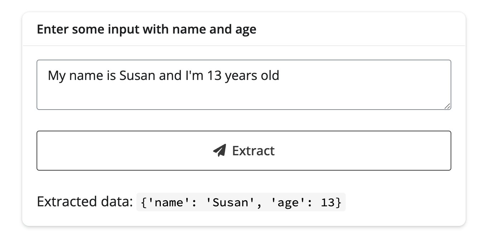
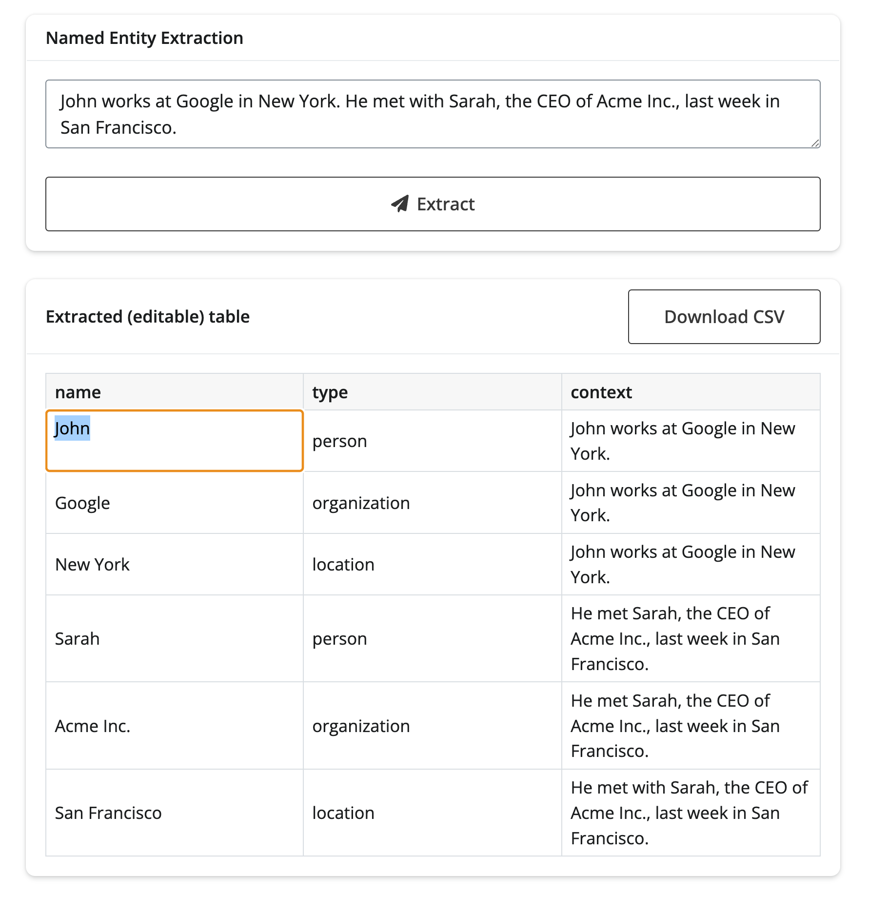
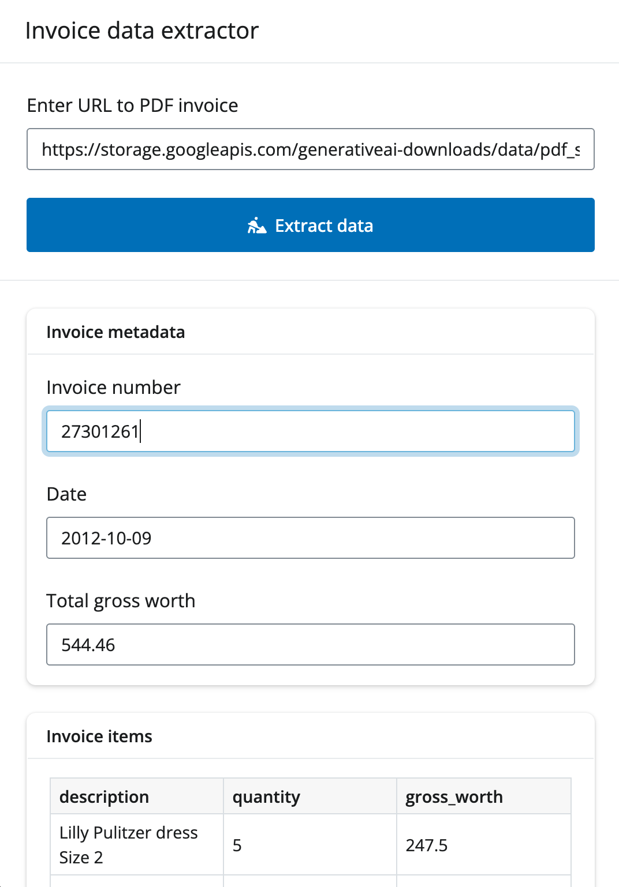

Structured data
LLMs are quite good at extracting structured data from unstructured text, images, and more. Although not always perfect, they can greatly reduce the manual work needed to extract information from large amounts of text or documents. Here are just a few scenarios where this can be useful:
- Form processing: Extract structured field-value pairs from scanned documents, invoices, and forms to reduce manual data entry.
- Automated table extraction: Identify and extract tables from unstructured text and images.
- Sentiment analysis: Extract sentiment scores and associated entities from customer reviews or social media posts to gain insights into public opinion.
- Classification: Classify text into predefined categories, such as spam detection or topic classification.
- Executive summaries: Extract key points and structured data from lengthy reports or articles to create concise summaries for decision-makers.
Intro to .extract_data()
The chatlas package provides a simple way to extract structured data: the .extract_data() method. To use it, you’ll need three things:
- Pick a model provider (e.g.,
ChatOpenAI()). - Define a data model by subclassing
pydantic’sBaseModelclass.- Here you’ll define the fields and value types you’re expecting in the input.
- Pass the unstructured input and
data_modelto the.extract_data()method.
from chatlas import ChatOpenAI
from pydantic import BaseModel
class Person(BaseModel):
name: str
age: int
chat_client = ChatOpenAI()
chat_client.extract_data(
"My name is Susan and I'm 13 years old",
data_model=Person,
).extract_data() then returns a dictionary matching the fields and types in the data_model:
{'name': 'Susan', 'age': 13}For more examples and details on how .extract_data() works, see the chatlas documentation.
chatlas also supports input other than text, such as images (content_image_file()) and PDF (content_pdf_file()).
Basic app
To go from this basic script to a Shiny app, you’ll at least want a couple things:
- Change
.extract_data()toawait chat_client.extract_data_async().- This helps the Shiny app scale efficiently to multiple concurrent users.
- You could also wrap this part in a non-blocking task to keep the rest of the app responsive within the same session.
- Decide how the user will provide and/or navigate the unstructured input(s).
- This could be a simple text input field (as below), a file upload, a chat interface, etc.
For now, let’s keep it simple and use a text input field:
app.py
from chatlas import ChatOpenAI
from pydantic import BaseModel
from shiny import reactive
from shiny.express import input, render, ui
chat_client = ChatOpenAI()
class Person(BaseModel):
name: str
age: int
with ui.card():
ui.card_header("Enter some input with name and age")
ui.input_text_area(
"user_input", None, update_on="blur", width="100%",
value="My name is Susan and I'm 13 years old",
)
ui.input_action_button("submit", label="Extract data")
@render.ui
@reactive.event(input.submit)
async def result():
return ui.markdown(f"Extracted data: `{await data()}`")
@reactive.calc
async def data():
return await chat_client.extract_data_async(
input.user_input(),
data_model=Person,
)
Editable data
Remember that the LLM is not perfect – you may want to manually correct or refine the extracted data. In this scenario, it may be useful to allow the user to edit the extracted data and download it when done. Here’s an example of how to do this in a named entity extraction app.
data_model.py
from pydantic import BaseModel, Field
class NamedEntity(BaseModel):
"""Named entity in the text."""
name: str = Field(description="The extracted entity name")
type_: str = Field(
description="The entity type, e.g. 'person', 'location', 'organization'"
)
context: str = Field(
description="The context in which the entity appears in the text."
)
class NamedEntities(BaseModel):
"""Named entities in the text."""
entities: list[NamedEntity] = Field(description="Array of named entities")
_ = NamedEntities.model_rebuild()
app.py
import pandas as pd
from chatlas import ChatOpenAI
from faicons import icon_svg
from shiny import reactive
from shiny.express import input, render, ui
from data_model import NamedEntities
chat_client = ChatOpenAI()
with ui.card():
ui.card_header("Named Entity Extraction")
ui.input_text_area(
"user_input", None, update_on="blur", width="100%",
value="John works at Google in New York. He met with Sarah, the CEO of Acme Inc., last week in San Francisco.",
)
ui.input_action_button("submit", label="Extract", icon=icon_svg("paper-plane"))
with ui.card():
with ui.card_header(class_="d-flex justify-content-between align-items-center"):
"Extracted (editable) table"
@render.download(filename="entities.csv", label="Download CSV")
async def download():
d = await data()
yield d.to_csv(index=False)
@render.data_frame
async def data_frame():
return render.DataGrid(
await data(),
editable=True,
width="100%",
)
@reactive.calc
@reactive.event(input.user_input)
async def data():
d = await chat_client.extract_data_async(
input.user_input(),
data_model=NamedEntities,
)
df = pd.DataFrame(d["entities"])
return df.rename(columns={"type_": "type"})
Populating inputs
For data extraction that isn’t tabular in nature, you might consider using extracted data to populate input controls that the user can make changes to.
Building on Google’s invoice and form data extraction example, here’s an example of how you could use structured data to populate input controls (in addition to an editable table).
data_model.py
from pydantic import BaseModel, Field
class Item(BaseModel):
description: str = Field(description="The description of the item")
quantity: float = Field(description="The Qty of the item")
gross_worth: float = Field(description="The gross worth of the item")
class Invoice(BaseModel):
"""Extract the invoice number, date and all list items with description, quantity and gross worth and the total gross worth."""
invoice_number: str = Field(description="The invoice number e.g. 1234567890")
date: str = Field(description="The date of the invoice e.g. 10/09/2012")
items: list[Item] = Field(
description="The list of items with description, quantity and gross worth"
)
total_gross_worth: float = Field(description="The total gross worth of the invoice")
_ = Invoice.model_rebuild()
app.py
import chatlas as ctl
import dateparser
import faicons
import pandas as pd
from shiny import reactive
from shiny.express import input, render, ui
from data_model import Invoice
ui.page_opts(
title="Invoice data extractor",
fillable=True,
)
with ui.sidebar():
ui.input_text(
"url",
"Enter URL to PDF invoice",
"https://storage.googleapis.com/generativeai-downloads/data/pdf_structured_outputs/invoice.pdf",
)
ui.input_task_button(
"extract",
"Extract data",
class_="btn btn-primary",
icon=faicons.icon_svg("person-digging"),
)
chat_client = ctl.ChatGoogle()
@reactive.calc
def invoice_data():
return chat_client.extract_data(
ctl.content_pdf_url(input.url()),
data_model=Invoice,
)
with ui.layout_column_wrap(height_equal="row"):
with ui.card():
ui.card_header("Invoice metadata")
@render.express
def invoice_metadata():
if not input.extract():
"Click the button to extract data"
return
d = invoice_data()
ui.input_text(
"invoice_number",
label="Invoice number",
value=d["invoice_number"],
width="auto",
)
ui.input_date(
"date",
label="Date",
value=dateparser.parse(d["date"]),
width="auto",
)
ui.input_numeric(
"total_gross_worth",
label="Total gross worth",
value=d["total_gross_worth"],
width="auto",
)
with ui.card():
ui.card_header("Invoice items")
@render.express(fill=True, fillable=True)
def invoice_items():
if not input.extract():
"Click the button to extract data"
return
@render.data_frame
def invoice_items_df():
df = pd.DataFrame(invoice_data()["items"])
return render.DataGrid(df, editable=True)